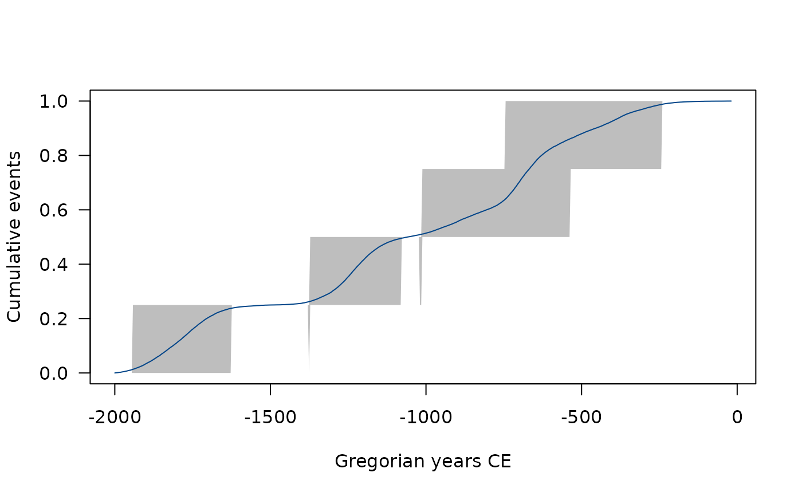
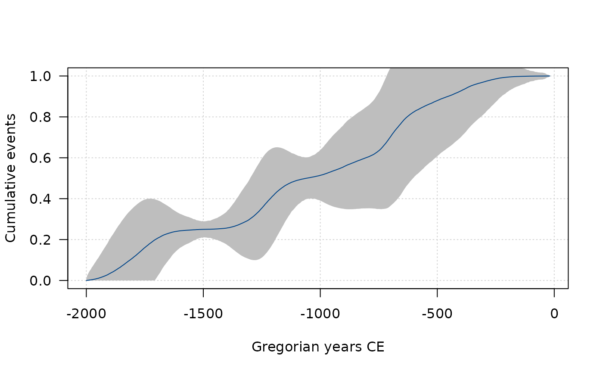
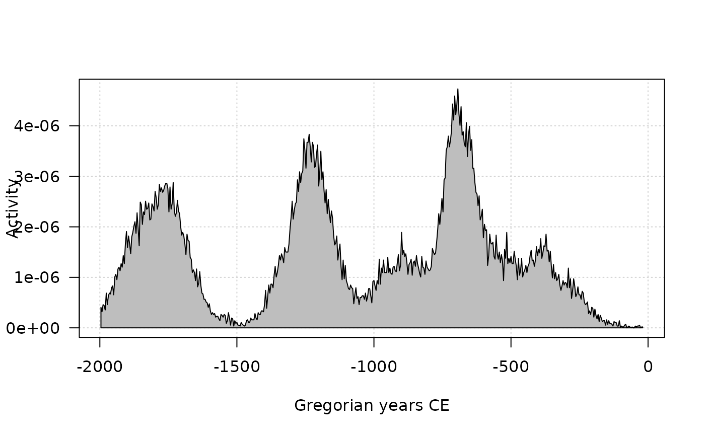

A statistical graphic designed for the archaeological study of rhythms of the long term that embodies a theory of archaeological evidence for the occurrence of events.
Usage
tempo(object, ...)
# S4 method for class 'CumulativeEvents,missing'
plot(
x,
calendar = getOption("ArchaeoPhases.calendar"),
interval = c("credible", "gauss"),
col.tempo = "#004488",
col.interval = "grey",
main = NULL,
sub = NULL,
ann = graphics::par("ann"),
axes = TRUE,
frame.plot = axes,
panel.first = NULL,
panel.last = NULL,
...
)
# S4 method for class 'EventsMCMC'
tempo(
object,
level = 0.95,
count = FALSE,
credible = TRUE,
gauss = TRUE,
from = min(object),
to = max(object),
grid = getOption("ArchaeoPhases.grid")
)Arguments
- object
An
EventsMCMCobject.- ...
Other graphical parameters may also be passed as arguments to this function.
- x
A
CumulativeEventsobject or anEventsMCMCobject.- calendar
A
aion::TimeScaleobject specifying the target calendar (seecalendar()).- interval
A
characterstring specifying the confidence interval to be drawn. It must be one of "credible" (credible interval) or "gauss" (Gaussian approximation of the credible interval). Any unambiguous substring can be given.- col.tempo, col.interval
A specification for the plotting colors.
- main
A
characterstring giving a main title for the plot.- sub
A
characterstring giving a subtitle for the plot.- ann
A
logicalscalar: should the default annotation (title and x and y axis labels) appear on the plot?- axes
A
logicalscalar: should axes be drawn on the plot?- frame.plot
A
logicalscalar: should a box be drawn around the plot?- panel.first
An an
expressionto be evaluated after the plot axes are set up but before any plotting takes place. This can be useful for drawing background grids.- panel.last
An
expressionto be evaluated after plotting has taken place but before the axes, title and box are added.- level
A length-one
numericvector giving the confidence level.- count
A
logicalscalar: should the counting process be a number or a probability (the default)?- credible
A
logicalscalar: should the credible interval be computed/displayed?- gauss
A
logicalscalar: should the Gaussian approximation of the credible interval be computed/displayed?- from
A length-one
numericvector giving the earliest date to estimate for (expressed in rata die).- to
A length-one
numericvector giving the latest date to estimate for (expressed in rata die).- grid
A length-one
numericvector specifying the number of equally spaced points of the temporal grid.
Value
tempo()returns anCumulativeEventsobject.plot()is called it for its side-effects: it results in a graphic being displayed (invisibly returnsx).
Details
The tempo plot is one way to measure change over time: it estimates the cumulative occurrence of archaeological events in a Bayesian calibration. The tempo plot yields a graphic where the slope of the plot directly reflects the pace of change: a period of rapid change yields a steep slope and a period of slow change yields a gentle slope. When there is no change, the plot is horizontal. When change is instantaneous, the plot is vertical.
References
Dye, T. S. (2016). Long-term rhythms in the development of Hawaiian social stratification. Journal of Archaeological Science, 71: 1-9. doi:10.1016/j.jas.2016.05.006 .
See also
Other event tools:
activity(),
elapse(),
occurrence()
Examples
## Coerce to MCMC
eve <- as_events(mcmc_events, calendar = CE(), iteration = 1)
eve <- eve[1:10000, ]
## Tempo plot
tmp <- tempo(eve)
plot(tmp)

plot(tmp, interval = "credible", panel.first = grid())

plot(tmp, interval = "gauss", panel.first = grid())
## Activity plot
act <- activity(tmp)
plot(act, panel.first = grid())
